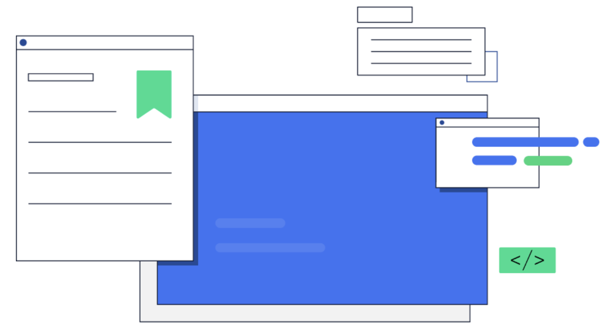

Bug bounty program

Overview
The Lisk bug bounty program is a long-standing initiative designed to offer an incentive in the form of a remuneration payment to anyone who locates any bugs or vulnerabilities that may exist within the existing Lisk core network.
All developers and researchers who report security vulnerabilities and bugs in Lisk Core may be eligible for a payment in accordance with our guidelines which are explained in more detail on this page. Firstly, please ensure before making any submissions that you have reviewed our bug bounty program policy rules below.
Guidelines
Focus on Lisk Core
Only vulnerabilities and bugs in Lisk Core are being considered. Focus on the master branch and, if one exists, the latest Betanet branch only. Right now any vulnerability existing within Lisk Core is likely to be present in the Lisk SDK as well.
Stay on your private network
Only perform all testing on your own private network. A report is only eligible if it is clear that the reporter did not abuse this bug on one of the public networks.
Keep it to yourself
It is forbidden to disclose reported bugs to the public. Doing so will forfeit any potential remuneration.
Validity of vulnerabilities
Vulnerabilities that were already submitted, are already known to us, or are fixed by the implementation of an existing LIP are not eligible for any remuneration. Serial vulnerabilities caused by the same underlying issue are treated as a single vulnerability.
Remuneration
The following table illustrated below lists the current remuneration structure for identifying bugs and vulnerabilities.

Report your Bug
To file a report, use this link to access the submission form. Alternatively, if you prefer to file a report via email, use the following address: security@lisk.com

Submitted vulnerabilities and bugs should be described in the most methodical and detailed manner as possible. Clear reproducible steps or a solution are preferred and may lead to a higher remuneration.
Disclaimer: We consider numerous different factors for determining the remuneration. Determinations of eligibility, impact, severity, and other factors related to the remuneration are at our sole and final discretion. Due to AML/KYC regulations, each participant contributing a bug or vulnerability report has to undergo a KYC procedure in order to receive any remuneration. This includes their full name and address, accompanied by a scan of a valid passport or ID card.